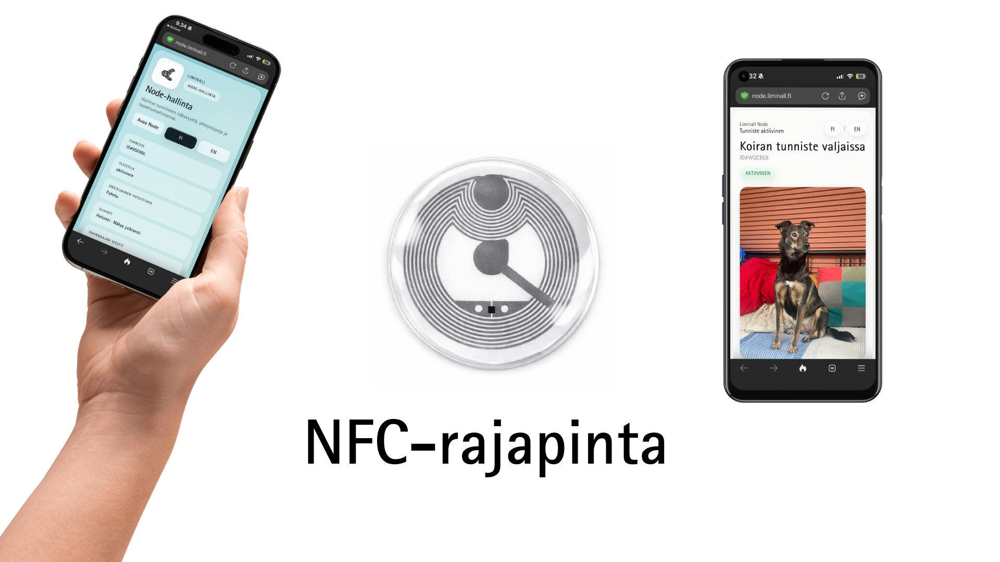
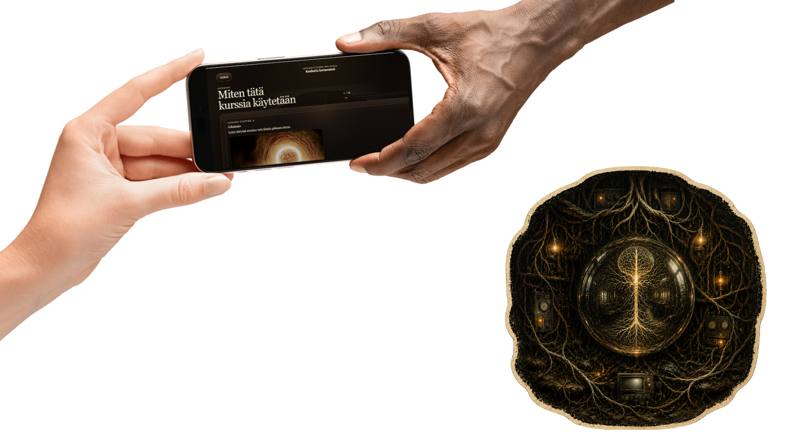
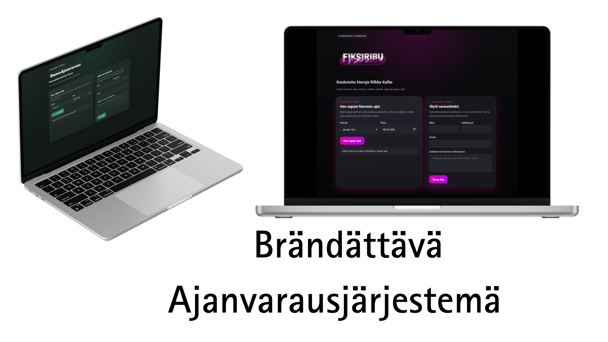
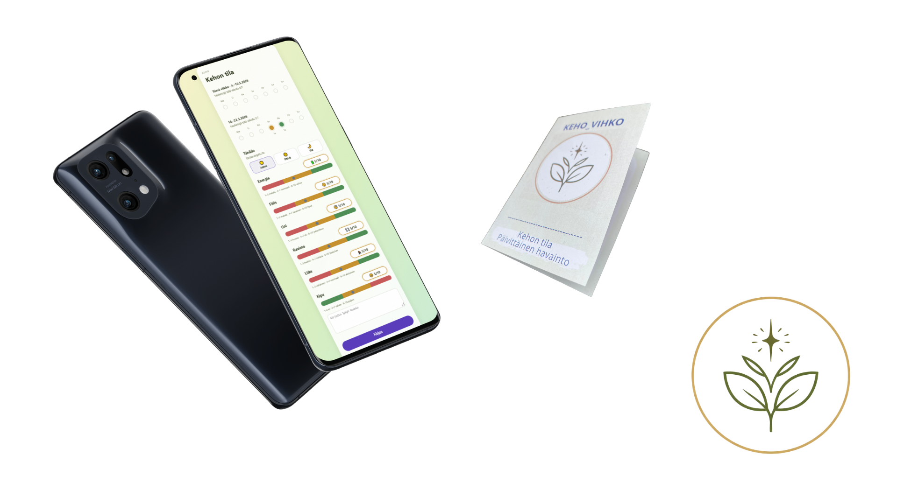
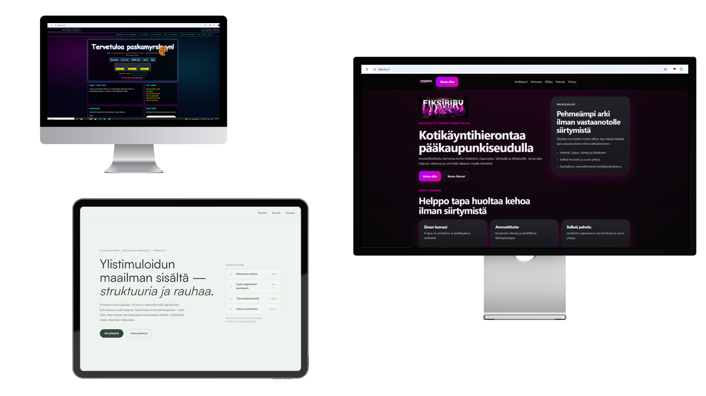

Tekoäly ei tee päätöksiä
Päätösvastuu säilyy ihmisellä. Väärintulkinnat ja eettiset riskit minimoidaan pitämällä ihminen arviointiketjussa.
Tulkintatila Lab · lab.tulkintatila.fi
Lab näyttää, miten ajattelu muuttuu toimiviksi digitaalisiksi ratkaisuiksi. Painopiste ei ole yleisessä esittelyssä, vaan siinä miten rakenne, rajaukset ja päätöslogiikka tehdään näkyviksi.
"En myy tekoälyä. Myyn rauhaa siitä, että tekoäly on hallinnassa."
Asiantuntijavetoisen pienyrityksen AI-arkkitehtuuri, jossa nelikerroksinen rakenne on ennen kaikkea vastuukysymys — ei tekninen ratkaisu.
Fiksiribu on asiantuntijavetoinen pienyritys, jonka toiminta perustuu keholliseen ja kokemukselliseen ymmärrykseen — ei standardoituihin prosesseihin. Tietoa syntyy muistiinpanoista, havainnoista, viesteistä ja asiakastyöstä ilman yhteistä rakennetta. Yritystä pyörittää yksi henkilö ilman erillistä IT-tiimiä.
Tästä syntyi selkeä vaatimus: tekoäly ei voi tehdä päätöksiä, vain tukea tulkintaa. Järjestelmän on oltava kevyt ja täysin yhden henkilön hallittavissa — ja selitettävissä asiakkaalle.
"Nelikerroksinen malli ei ole tekninen pakko, vaan vastuukysymys."
Keskeiset suunnittelupäätökset
Päätösvastuu säilyy ihmisellä. Väärintulkinnat ja eettiset riskit minimoidaan pitämällä ihminen arviointiketjussa.
Järjestelmää käytetään tietoisesti ja tilanteen mukaan — ei taustalla jatkuvasti. Hitaus oikeissa kohdissa suojaa yliluottamukselta.
Ei erillistä data-alustaa tai monimutkaista integraatiokerrosta. Kaikki on yhden henkilön ylläpidettävissä.
Tietoa ei pakoteta jäykkään muotoon ennen kuin käyttötarkoitus on selvä. Ennenaikainen rakenteistaminen tuhoaa merkityksen.
"Jos järjestelmää ei voi selittää asiakkaalle, sitä ei käytetä." Tekninen hienostuneisuus ei ole tavoite.
Kaikkea mahdollista ei rakenneta. Rajaaminen on suunnittelua, ei puute — jokainen päätös tehty ylläpidettävyyden ehdoilla.
Toteutuksia, joissa suunnittelu, järjestelmärakenne ja käyttölogiikka sidotaan samaan kokonaisuuteen.

Fyysinen esine ei vanhene — mutta sen digitaalinen sisältö pitää pystyä päivittämään. NFC-tagi luo esineelle pysyvän digitaalisen osoitteen: sisältö vaihtuu, tagi ei. Rakennettu arkkitehtuuri, jossa fyysinen ja digitaalinen kerros pysyvät erillään mutta sidottuina.
liminall.fi ↗
Fyysinen opus halusi yhdistyä digitaaliseen sisältöön — ilman QR-koodia, kirjautumista tai sovelluksen lataamista. NFC-tunniste fyysisessä kohteessa laukaisee oikean näkymän suoraan puhelimessa. Fyysinen kosketus riittää.
rauhoitahermostosi.tulkintatila.fi ↗
Saatavuus, palvelut ja varausehdot olivat eri paikoissa — käyttöliittymä ei kertonut, miksi tietty aika ei ollut saatavilla. Kaikki logiikka yhdistettiin yhteen rakenteeseen: UI seuraa nyt samaa päätösmallia kuin taustajärjestelmä.

Havainnot kirjattiin eri paikkoihin — muistiinpanoihin, viesteihin, lomakkeisiin. Myöhemmin niitä oli vaikea löytää tai yhdistää. Rakennettu työkalu, jossa merkinnät, luokittelu ja haku ovat samassa paikassa. Tieto on käytettävissä myöhemmin.

Useimmilla pienyrityksillä on sivut — mutta hakukoneet ja tekoälyjärjestelmät eivät löydä niitä, koska geo-, entiteetti- ja rakennedata puuttuvat kokonaan.
Rakennettu staattisia HTML one-pagereita, joihin GEO-tagit, JSON-LD-entiteettikerros ja tekninen SEO on sisäänrakennettu alusta asti. Kevyt, nopea, helposti ylläpidettävä — ja löydettävissä sieltä mistä asiakas oikeasti etsii.
AI-työnkulut
Kun AI on käytössä ilman rakennetta, kukaan ei tiedä missä kohdassa se toimii ja missä ihminen vastaa. Virheet huomataan liian myöhäin.
Rakennettu vaiheistettuja työnkulkuja, joissa kirjoittaminen, luokittelu ja hyväksyminen ovat eri kerroksia. Jokainen vaihe on tarkistettavissa ennen seuraavaa.
Sähköpostiautomaatio · Myynnin tuki
Liidit sisään, personoidut sähköpostit ulos. Agentti generoi viestit kampanjakohtaisilla muuttujilla — ihminen hyväksyy ennen lähetystä.
Dry-run-tila, domain throttling ja follow-up-välit rakennettu sisään. Automaatio ei tarkoita kontrollin luopumista.
SaaS · Omavalvonta · Terveys- ja hyvinvointiala
Laki velvoittaa terveys- ja hyvinvointialan mikroyrittäjät pitämään omavalvontasuunnitelman — mutta harva tietää mitä se tarkoittaa tai miten se tehdään.
Selainpohjainen SaaS, joka ohjaa suunnitelman läpi tunnissa. Landing flow johtaa suoraan äppiin — ei välivaiheita, ei paperityötä.
www.laatuhieronta.fi ↗Tämä ei ole yleinen portfolio henkilölle tai palvelulistalle. Tulkintatila Lab toimii paikkana, jossa tehdään näkyväksi miten digitaaliset ratkaisut rakentuvat käytännössä.
Olennaista on, miten ratkaisu on rajattu, mitä sen pitää tehdä, mihin kohtaan käyttöä logiikka sijoittuu ja millä perusteilla rakenne on valittu.
Lopputulos on tärkeä, mutta myös sen perustelut kuuluvat näkyviin.
"Pelkkä lopputulos ei riitä: myös perustelut, vaihtoehdot ja hylätyt polut kuuluvat osaksi arkkitehtuuria."
Toistuvat teemat, jotka nousevat esiin casetoteutuksissa.
Missä käyttöliittymä loppuu, missä sovelluslogiikka alkaa ja mitä ei pidä sekoittaa samaan kerrokseen.
Mikä on pienin toimiva rakenne, jolla palvelu voidaan julkaista, ylläpitää ja tehdä havaittavaksi ilman turhaa monimutkaisuutta.
Miten käyttäjätila, varausvaiheet, luonnokset tai kesken jäänyt työ säilyvät hallitusti järjestelmän eri vaiheissa.
Milloin AI toimii kirjoittajana, arvioijana, luokittelijana tai työparina — ja miten nämä roolit erotetaan toisistaan.
Millä ehdoilla järjestelmä hyväksyy, estää, siirtää tai priorisoi toimintaa, ja miten nämä säännöt tehdään näkyviksi.
Pelkkä lopputulos ei riitä: myös perustelut, vaihtoehdot ja hylätyt polut kuuluvat osaksi arkkitehtuuria.
Jos valmiit työkalut eivät sovi työn rakenteeseen, niiden väliin on mahdollista rakentaa pienempi, selkeämpi ja tarkoitukseen tehty ratkaisu. Yksi ihminen, suora yhteys rakentajaan.
hello@tulkintatila.fi